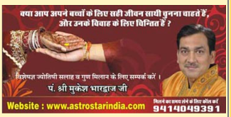
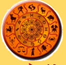
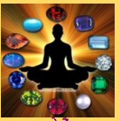
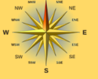
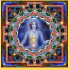

“पंडित मुकेश भारद्वाज” भारतीय वैदिक ज्योतिष शास्त्र और भारतीय वैदिक वास्तुशास्त्र के विश्व विख्यात विद्वान हैं। ज्योतिष और वास्तु के क्षेत्र में इनको राष्ट्रीय और अंतर्राष्ट्रीय स्तर पर अनेकों पुरस्कार और सम्मान मिलते रहे हैं। भारतीय अध्यात्म, ज्योतिष और वास्तु को इन्होंने अंतर्राष्ट्रीय ऊंचाइयों तक पहुँचाने में महत्वपूर्ण योगदान दिया है।
भारतीय वैदिक ज्योतिष की सभी विधाओं — हस्तरेखा, रत्न शास्त्र, अंक शास्त्र, हस्तरेखा ज्ञान आदि सभी ज्योतिषीय के अलावा टैरो कार्ड रीडिंग, फेंगशुई आदि पर किए गए इनके शोध बेहद अनुकरणीय हैं। आगे निरंतर
पंडित मुकेश भारद्वाज फेसबुक पर


ज्योतिषीय ग्रहों का मानव पर प्रभाव !
सौर परिवार में मानव सभ्यता का विस्तार सिर्फ पृथ्वी पर ही हुआ, इसलिए पृथ्वी को ही आधार मानकर सौर परिवार की गतिविधियों का आंकलन किया गया। वैदिक ज्योतिष मानव जीवन पर जो प्रभाव देखने को मिलता है, इस गणना को फलित ज्योतिष कहा जाता है। भारतीय वैदिक ज्योतिष का इतिहास विश्व में सबसे ज्यादा प्राचीन है। वेद मानव इतिहास के सबसे प्राचीन लिखित ग्रंथ हैं।
➜ आगे निरंतर
रत्नों का मानव जीवन पर प्रभाव
ग्रहों की आभा जब रत्नों से होकर शरीर के अंगों में प्रवेश करती है तो इन ग्रहों का प्रभाव शरीर को अधिक तीव्रता के साथ प्रभावित करता है। रत्नों से गुजरकर आई हुई किरणों की आभा ग्रहों, रत्नों और शरीर की प्रकृति के अनुसार हमारे हार्मोन्स को प्रभावित करती है।
➜ आगे निरंतर
वास्तु का वैज्ञानिक आधार
वास्तुशास्त्र ना सिर्फ पंचमहाभूतों के ज्ञान से जुड़ा है बल्कि पूर्णतया वैज्ञानिक तथ्यों को भी अपने अन्दर समाहित किया हुआ है। वास्तुशास्त्र पृथ्वी की ऊर्जा को मनुष्य जीवन में किस तरह बेहतर उपयोग किया जा सकता है, यह सिद्धान्त तय करता है।
➜ आगे निरंतर
यंत्रों में छिपे गूढ़ रहस्य !
यंत्र भारतीय ज्योतिष का अभिन्न अंग हैं। ये वो शक्तिपुंज हैं जिनसे सकारात्मक ऊर्जा प्राप्त की जा सकती है। यंत्रों में विभिन्न शक्तियों के पृथक-पृथक कोण होते हैं और विशेष मंत्रों के उच्चारण के साथ इनकी पूजा की जाती है।
➜ आगे निरंतरहस्तरेखाओं का वैज्ञानिक आधार !
शरीर विज्ञान के अनुसार मनुष्य के हाथों में तंत्रिकाओं का सम्बन्ध उत्तेजित होता है। हस्तरेखा विज्ञान इसकी खोज की ओर आगे बढ़ता है और हथेली की अंगुलियों के पोरों द्वारा ज्ञान लिया जाता है।
➜ आगे निरंतर